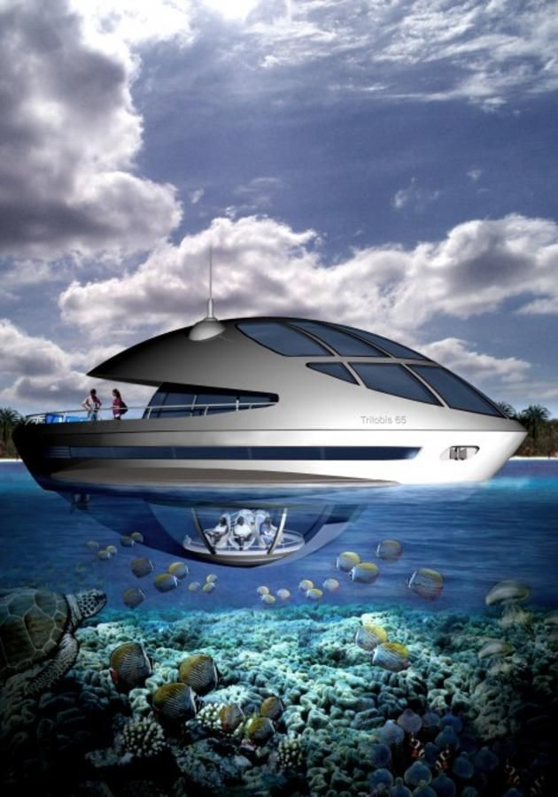

Willkommen in der Nemo Suite, einem einzigartigen Rückzugsort, der Sie in die faszinierende Welt der Ozeane entführt.
Sobald Sie die Tür zu diesem zauberhaften Zimmer öffnen,
werden Sie von einem Ambiente aus maritimer Eleganz und verspieltem Charme umgeben.Das Schlafzimmer ist ein gemütlicher Rückzugsort,
der von der Schönheit des Meeres inspiriert ist.
Ein komfortables Kingsize-Bett lädt zum Träumen ein,
während die geschmackvolle Dekoration und die subtilen Beleuchtungselemente eine ruhige und erholsame Atmosphäre schaffen.
Die Nemo Suite ist nicht nur ein Ort zum Verweilen, sondern auch ein Ort, an dem Fantasie und Realität auf wunderbare Weise miteinander verschmelzen.
Tauchen Sie ein in die Magie des Meeres und erleben Sie einen unvergesslichen Aufenthalt in diesem einzigartigen Hotelzimmer.
Preis pro Nacht:

Die Titanic Suite erhebt sich majestätisch als Hommage an die Eleganz und das Erbe des legendären Schiffes.
Dieses prächtige Hotelzimmer lädt seine Gäste ein, in die faszinierende Ära der Belle Époque zurückzukehren und den Luxus der ersten Klasse zu erleben.
Beim Betreten der Titanic Suite werden Sie von einem opulenten Interieur umgeben, das die prunkvolle Atmosphäre der 1910er Jahre widerspiegelt.
Von handgearbeiteten Möbeln bis hin zu kunstvollen Details ist jedes Element sorgfältig ausgewählt, um ein Gefühl von Raffinesse und Nostalgie zu vermitteln.
Für diejenigen, die ein einzigartiges und unvergessliches Erlebnis suchen, ist die Titanic Suite eine Hommage an die Geschichte und den Luxus,
die den Gästen einen unvergleichlichen Aufenthalt bieten.
Willkommen an Bord dieses zeitlosen Meisterwerks der Gastfreundschaft.
Preis pro Nacht:


Die U-Boot Suite ist ein einzigartiges und faszinierendes Erlebnis, das Sie auf eine abenteuerliche Reise in die Tiefen der Ozeane entführt.
Sobald Sie die Tür zu dieser außergewöhnlichen Unterkunft öffnen, werden Sie von einem Ambiente aus maritimer Mystik und technologischer Innovation umgeben.
Das Innere der Suite ist ebenso beeindruckend gestaltet, wobei jedes Detail an das Design und die Atmosphäre eines echten U-Bootes erinnert.
Die geschwungenen Linien, die metallischen Akzente und die subtile Beleuchtung schaffen eine authentische und immersive Umgebung,
die Sie in eine andere Welt entführt. Das Schlafzimmer der U-Boot Suite bietet einen gemütlichen Rückzugsort, der von der Ruhe der Tiefsee inspiriert ist.
Ein komfortables Bett und nautische Details sorgen für eine erholsame Nachtruhe.
Preis pro Nacht: